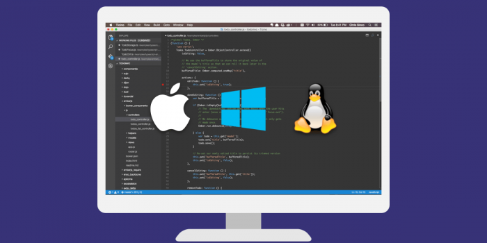

Minggu lalu melalui acara Build developer conference, Microsoft mengumumkan editor baru buatannya yang diberi nama Microsoft Visual Studio atau dapat disingkat VSCode. Meskipun masih dalam tahap preview namun kita sudah dapat mencoba editor baru ini dengan mengunduhnya melalui situs resmi visualstudio.com .
Microsoft menyadari bahwa tidak semua programmer menggunakan sistem operasi besutannya memutuskan untuk merilis Visual Studio Code untuk dua sistem operasi lain yang tak kalah populer OS X dari Apple dan Linux. Target utama dari editor ini ialah para web developer yang mengembangkan aplikasi web menggunakan ASP.NET dan Node.js. Selain Node.js VSCode juga mendukung teknologi serupa seperti HTML, CSS, Less, Sass, dan JSON .Seperti editor pada umumnya VSCode memiliki fitur syntax coloring dan bracket matching. Sampai hari ini bahasa pemrograman yang mendukung fitur tadi adalah Batch, C++, Closure, Coffee Script, DockerFile, F#, Go, Jade, Java, HandleBars, Ini, Lua, Makefile, Markdown, Objective-C, Perl, PHP, PowerShell, Python, R, Razor, Ruby, SQL, Visual Basic, dan XML.
VSCode juga memiliki fitur IntelliSense yang cukup canggih. Fitur ini akan sangat terasa apabila kita mengembangkan aplikasi web yang menggunakan HTML, CSS, JavaScript, JSON, Less, atau SASS. Fitur IntelliSense merupakan salah satu fitur yang membantu kita dalam menulis kode program melalui popup yang muncul secara otomatis pada saat kita sedang mengetik dan menampilkan saran sintaks yang bisa kita pilih.Fitur lain yang tak kalah keren adalah telah integrasinya version control git dalam VSCode. Dengan adanya fitur ini kita dapat dengan mudah melakukan commit, melihat perubahan di repositori master maupun branch, bahkan VSCode akan memberikan penanda jika terjadi konflik pada repositori git kita.Meskipun masih dalam tahap preview namun VSCode sudah memiliki segudang fitur menarik yang menanti untuk dicoba. Jika pembaca menjadi editor baru untuk menemani mengembangkan aplikasi Node.js mungkin VSCode bisa menjadi partner setia.